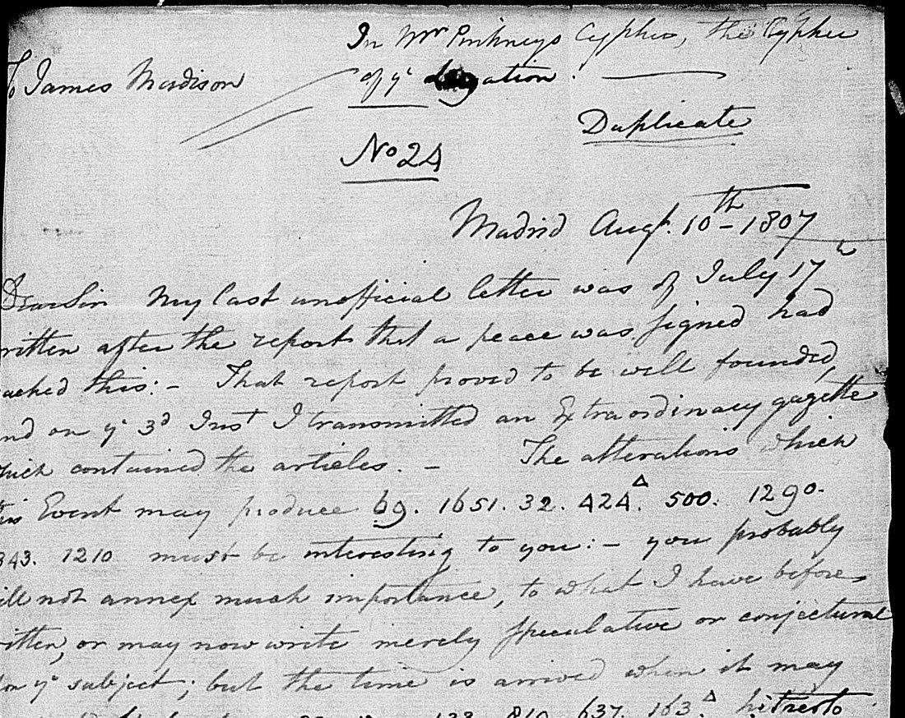
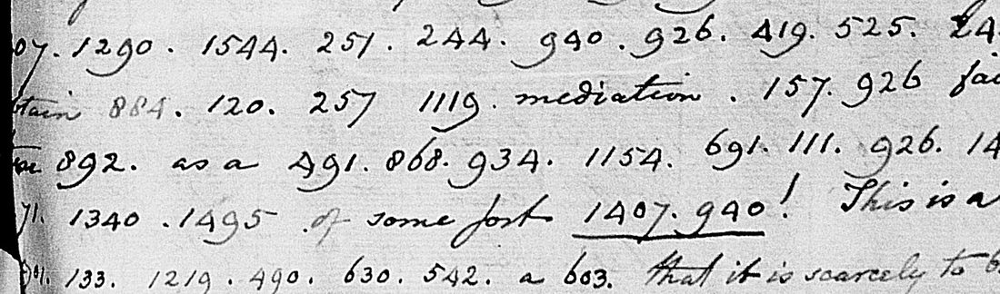
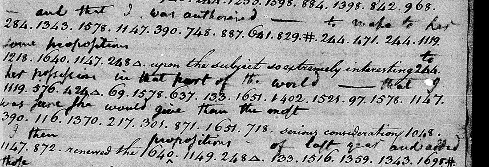

At a glanceKey from external plaintext · 1,125 of 1,145 code groups give sense
- The letter
- George W. Erving, American chargé d’affaires at Madrid, to Secretary of State James Madison, 10 August 1807, with a postscript of the 11th: private letter No. 24, the duplicate, headed “In Mr Pinkneys Cypher, the Cypher of ye Legation”.
- Where
- National Archives, RG 59, Diplomatic Despatches, Spain, vol. 10, on microfilm M31 reel 12, frames 0362–0367 (catalog NAID 188605361). Founders Online prints the letter decoded, without the code groups (early access 99-01-02-1993). Not in the catalogue and not on DECODE.
- The cipher
- The legation code Charles Pinckney used at Madrid: numbers up to about 1,700 for words, syllables and letters, partly in alphabetical runs, written between dots inside the clear text. A caret over a group makes it plural.
- How it was deciphered
- The 1,145 groups were transcribed from the film and lined up with the Founders text, which gave 414 rows of the code. Of the 47 groups it shares with Jacob Wagner’s 1803 decode of Pinckney’s own despatch, 45 agree and two stay undecided.
- What it says
- Godoy paid for the Hanover bargain out of his own funds, sees Hanover handed to Westphalia, “believes that he has been deceived and is furious”, and plans, “as a dernier resort”, an alliance with England.
- Still open
- Eight groups that occur only once (633; 632, 455, 1482; 767, 679, 378; one lost in the binding) and 916 in the postscript. Counting conservatively, with hidden digits and emendations also set aside, 94.25% of the groups stand.
- Credit
- Feyseel Nur, with Claude Opus 5.5 subagents (transcription, key rebuild, decode); key check against Wagner’s 1803 decode; adversarial review by OpenAI Codex. Contributed in PR #21.
01 The letter and its two texts
Erving was the American chargé d’affaires at Madrid, and the code he used was the legation’s, from the time of Charles Pinckney, minister there before him. His private letters to Madison were numbered; No. 21 of 24 March 1807, “in the Cypher of the Legation”, is printed from Madison’s own decode and is written up with the 1812 Adams despatch on the legation-codes page. No. 24, of 10 August 1807, opens on the news that the peace (of Tilsit) was signed and asks what it will change between France and Spain. Much of its first six pages is in code.

Two texts of it are at hand:
- The duplicate on the film. NARA’s microfilm of the Spain despatches (M31 reel 12, frames 0362–0367) has the second copy, marked “Duplicate”, with the code groups in ink and no decode between the lines. The left edge of the third page and the right edge of the fourth are partly hidden in the binding.
- The Founders text. The Papers of James Madison print the letter in early access on Founders Online (99-01-02-1993) as plain English, decoded, with ten blank gaps ⟨ ⟩ and a few supplied words. They give the source as “DNA: RG 59—DD, Spain” and do not say how the code was decoded. The groups are not printed.
The two agree in the slip “my unofficial letter of March 4th” (the image has “March 4”; the letter meant is that of 24 March), and differ in small ways: Founders heads the letter “In the ⟨Cypher⟩ of the Legation” and prints “you will not probably annex” where the film has “you probably will not annex”. Several Founders brackets fall where the film loses digits in the binding (⟨ ⟩ has been informed, deceive him ⟨ ⟩, ⟨Prince⟩, ⟨a⟩gents). Whether the editors decoded this duplicate or took their text from another copy is not settled here; nothing below depends on it.
02 Pinckney’s code
The code is a single list of numbered words, syllables and letters. Groups are written with dots between them inside the clear sentences, and a word may take several groups: 724. 549. 934 is Ha-nov-er, 1552. 66 establish-ing, 1684. 110. 1432. 368. 624 Ca-ta-lo-ni-a. The commonest are 1651 the, 133 of, 244 to, 1484 is, 1343 and and 926 he. A small triangle or caret over a group marks a plural: 424^ ions, 1593^ tions, 580^ ports.
Parts of the list run in alphabetical order, which helps place a group seen once:
| Groups | Values |
|---|---|
| 742–745 | at, ate, ated, ation |
| 870–880 | their, them, then, … there, therefore, these, they, thin, thing |
| 884, 887 | this, tho’ |
| 1340, 1341, 1343 | an, ance, and |
Higher up the order breaks (1661 Prince, 1680 can, 1686 by, 1688 but), so the code is only partly alphabetical. Erving made slips of his own: 66 (ing) for in three times, 665 for 605 in change, 870 their for they, and in Hanover he wrote 724. 549. 943 twice and 724. 549. 934 once, while 943 is ly in un-friend-ly. In March he had written Hanover 724. 529. 934.
The rebuilt list (key_pinckney.tsv) has 414 rows: the 395 numbers that occur in this letter and 19 more from Wagner’s page, each with where it is attested.
03 The decoded text: Hanover, Portugal and Godoy’s counter-project
Decoded groups in capitals, Erving’s clear words in lower case; [?] a group with no value, {…} a conjecture
The letter is about Manuel Godoy, the Prince of Peace, and what the peace of Tilsit meant for him. First the Hanover bargain of the spring, which Erving had reported in March:
I did not then know what I now learn that a considerable SUM OF MONEY WAS PAID BY THE PRINCE (OUT OF HIS OWN FUNDS) OVER AND ABOVE the STIPULATION FOR TROOPS. THE TROOPS MARCHED and we read of THEIR ARRIVAL ON THE ODER. … but THE war concluded it is found more convenient TO ADD HANOVER to the KINGDOM OF WESTPHALIA and the PRINCE IS TOLD that HE shall HAVE A TERRITORY somewhere ELSE. It may be the intention OF THE EMPEROR TO GIVE HIM one, but THE PRINCE does NOT THINK so; he believes that he has been DECEIVED AND is FURIOUS. Already a project is formed OF ESTABLISHING A KINGDOM OF EBRO including CATALONIA NAVARRE AND BISCAY and the plan OF INVADING PORTUGAL which during the war SERVED only AS A MEANS OF PROCURING MONEY from time to time IS NOW seriously RENEWED with a view to ACTUAL CONQUEST …
Portugal has been told to close its ports to the English. Godoy is still flattered with EXPECTATIONS of personal aggrandisement, but now begins to see that he will not be forgiven for his [?] intrigues, and “HIS actual determination IS TO RESIST”. Then the counter-project, on the third page:

IN THE mean TIME he has formed a COUNTER PROJECT. The first part OF HIS PLAN IS BY representing the vast [?] [?] [?] SPAIN BY THE WAR TO obtain the permission OF FRANCE TO MAKE A SEPARATE PEACE WITH ENGLAND AND NOT suspecting doubtless that RUSSIA HAS HERSELF any understanding WITH FRANCE HOSTILE TO ENGLAND HE HOPES TO obtain THIS POINT THRO’ HER mediation. IF HE fails there THEN as a DERNIER RESORT HE WILL MAKE AN ALLIANCE of some sort WITH ENGLAND! This is a COURSE OF SO DESPERATE a CHARACTER that it is scarcely to be BELIEVED IN.
Erving has this “from the very [best?] AUTHORITY (not from HIMSELF)”. Godoy regrets sending his troops to Hanover, has no expectation of seeing them again, and wishes he might “QUIETLY RETIRE FROM HIS STATION”. The fourth and fifth pages are a portrait of the French ambassador, François de Beauharnais:
A NARROW LOW INTRIGUING POLITICIAN, AFFECTING CANDOR, [?] perfectly false, assuming TO CONTROUL EVEN OPINION BY THE SUPERIORITY OF HIS TALENTS, THO’ certainly destitute of any particular advantage IN THAT RESPECT; full OF HIMSELF, consummately VAIN AND OSTENTATIOUS, AND IN HIS CONDUCT TO THE PRINCE inSOLENT AND overBEARING. THIS ILL suits with THE PRINCE WHO HIMSELF HAS VANITY Enough to think that HE IS is the greatest MAN IN EUROPE EXCEPT BUONAPARTE …
The sixth page ends on the thought that France may drive “THE ROYAL family OF SPAIN AS WELL AS OF PORTUGAL TO ESTABLISH THEIR EMPIRES ON THE OTHER SIDE OF THE ATLANTIC”. The rest of the letter is in clear. The postscript of the 11th goes back into code: Spain is to send an army into Portugal and French troops will take its place; the Emperor has written to the King, advising him to take the Prince of Asturias into his confidence; and Godoy, talking to the Prussian chargé d’affaires, says that “IF THE KING HAD NO successOR HE THE PRINCE WOULD risque EVERY THING TO KEEP BUONAPARTE OUT OF THE COUNTRY”, but that, unpopular and blamed for every distress of the country, he has “NO course … BUT IMPLICITLY TO SUBMIT to all THAT MAY BE DEMANDED”. Eleven weeks later the treaty of Fontainebleau (27 October 1807) divided Portugal and promised Godoy a principality in the south of it.
04 The code against the Founders text
Founders leaves ten blanks in the coded passages. The code fills six of them with values that recur elsewhere in the letter outside the gaps. Grades follow the adversarial review (codex_review/gaps.md):
| Founders | Groups | The code | Grade |
|---|---|---|---|
| ⟨ ⟩ has been informed | [15]78. 1010. 284 | THAT GOVERNMENT (Portugal’s); the first digits of 1578 are in the binding | solid |
| flattered with ⟨ ⟩ of personal | 176. 979. 1593^ | EXPECTATIONS; 979 and 1593 occur only here | plausible |
| given for ⟨ ⟩ | 408. 633. 69. 191. 728^ | for-GIVEN for HIS [?] INTRIGUES; 633 has no value (past is a guess) | speculative |
| deceive him ⟨ ⟩ (to do him | [1]343 | AND | solid |
| not destitute of ⟨ ⟩ | 632. 849. 1147. 455. 1482 | ?-r-i-?-?; pride is a guess | open |
| France ⟨ ⟩ to England | 1544. 251 | HOSTILE, the same pair as in “in fact hostile or unfriendly” | solid |
| as a dernier ⟨ ⟩ | 1154. 691. 111 | RESORT (1154 as in res-is-t) | solid |
| his troops ⟨ ⟩ has no expectation | 244. 724. 549. 934. 1343 | TO HANOVER AND | solid |
| expectation of ⟨ ⟩ seeing | 133 | nothing is missing: of, then seeing in clear | no gap |
| tranquillize ⟨ ⟩ the alarm ⟨or⟩ | 877. 1497. 13[?] | THESE AL[ARMS], TO CONCEAL; the group after al is half hidden | solid for THESE |
Words Founders supplies in brackets are confirmed by the code: ⟨must⟩ (1250. 1203), ⟨see⟩ (with NOW before begins, 429), ⟨character⟩ (603), ⟨Prince⟩ (1661); “the troops to ⟨be⟩ employed” is THE TROOPS SO employed (1219), and “Embassador here ⟨are⟩” has IS (1484). In three places the code says something else:
- “from the very best informed ⟨persons⟩”: the code has VERY [368] AU-THO-RI-TY (748. 887. 137. 1362). Best for 368 is a guess, since 368 is ni in Ca-ta-lo-ni-a.
- “the vast costs brought about by the war”: the code has the vast [767. 679. 378] SPAIN BY THE WAR. The three groups occur once; Spain (1210) is certain.
- “the character of that with which his recommendation”: the code has CHARACTER OF THAT WHICH HIS, with no with.
05 How the key was rebuilt and checked
The groups were transcribed from the six frames and set against the Founders text phrase by phrase, so that each group took the value Founders gives at that place; a value fixed in one place was then carried to every other occurrence and tested there. This is a key recovered from a plaintext found elsewhere: most values rest on the edition, and the work cannot be a blind test of them. Two checks stand outside it.
Wagner’s 1803 decode. Pinckney’s own despatch of 22 February 1803 (M31 reel 7, frame 0348) is in the same code, and Jacob Wagner, chief clerk of the State Department, wrote its decode between the lines. It shares 47 group numbers with Erving’s letter. For 45 of them the values agree (217 would, 1218 some, 872 then, 748. 887 au-tho, 1402 wor, 1598 tain, 301 give …). Two are undecided: 584 (na in the key, nation in the alignment, Wagner’s nations?) and 943, which in Wagner’s line stands between friend and ship with no word of its own.

The March letter. Erving’s No. 21 of 24 March, with Madison’s decode (targets/erving1807), gives further pairs. With Wagner it supports 716 of the 1,145 groups (62.5%, 141 different numbers) under a strict match; a value that recurs with the same sense elsewhere in this letter, or has that outside support, covers 908 (79.3%). The rest, about one group in five, is fitted to the Founders text alone.
The transcription. 53 groups, from legible stretches of four frames and the three spellings of Hanover, were re-read on the images by the reviewer: no digit differed. That is a purposive sample, not an error rate for the whole.
The review. OpenAI Codex reviewed the files adversarially and found the result confirmed but overstated (codex_review/review.md). Its corrections are the figures used on this page: 45 of 47 Wagner groups (not 46), 79.3% recurrence or outside support (not 80.5%), and six firm gap fills rather than ten.
06 What remains uncertain
Of the 1,145 groups in the alignment, 1,136 have a value (99.2%) and 1,125 (98.3%) give sense without the eleven marked conjectures. Grades as in the repository’s conventions: most values are C, from the known plaintext; M uncertain; I inferred from context or from the alphabetical order.
- No value (each occurs once): 633 (“his [?] intrigues”); 632, 455, 1482 in “destitute of ?-r-i-?-?”; 767, 679, 378 before “Spain by the war”; a group ending in 4 hidden in the binding (“affecting candor, [?] perfectly false”); and 916 after “the Prince of [Asturias]” in the postscript, where its usual value as makes no sense.
- Two positions not in the alignment: after 1114. 244 (“advised him to”) on frame 0367, where a hole in the leaf may or may not hide a group, and the start of the last line of the postscript page, half covered by the facing leaf, probably 244 to (“submit [to] all”). Counted, they make the transcription 1,147 groups and the share that gives sense 98.1%.
- M: 368 best; 586. 1424 narrow low (Founders has the words, the split between the two groups is assumed); 66 West in West-ph-al-ia (66 is ing elsewhere); 169. 80. 115 d’af-fai-res; [x]47 Asturias; 1543 t in except; 310, which is ceiv in deceived and liev in believed; and the emendations of Erving’s slips (943 twice, 66 three times, 665, 870).
- I: EXPECTATIONS (176. 979. 1593^, fitted inside a Founders gap); 878. 1394 they are, placed by the alphabetical run after 877 these (Founders: “whatever these are”); and the 37 groups whose first digits are hidden in the binding, restored from context (among them the 1578 of THAT GOVERNMENT and 13[?] in alarms).
- The conservative count. Setting aside the conjectures, the 37 restored groups and nine emended occurrences, the review counts 1,081 of 1,147 positions (94.25%). That is a sensitivity count, not a measured error rate; the excluded groups mostly give sense.
- The Founders source. How the editors decoded the letter, and from which copy, is not known; the ten blanks may reflect the binding of this duplicate or the state of another copy.
07 Sources
- National Archives, RG 59, Despatches from US Ministers to Spain, vol. 10 (24 Aug 1805 – 19 Apr 1808), microfilm M31 reel 12, frames 0362–0367: catalog.archives.gov NAID 188605361. Frames 0365 (right) and 0366 are clear text.
- Same series, vol. 6 (11 Jun 1795 – 12 Apr 1803), M31 reel 7, frame 0348: Pinckney to Madison, 22 February 1803, with Jacob Wagner’s interlinear decode: NAID 188604008.
- “To James Madison from George W. Erving, 10 August 1807”, Founders Online, early access document from The Papers of James Madison, Madison/99-01-02-1993 (not an authoritative final version).
- Erving to Madison, 24 March 1807, Founders Madison/02-13-02-0559 (PJM-SS 13:529–31), and its write-up on the legation-codes page.
- Contribution: Feyseel Nur, PR #21 (4 October 2026); adversarial review by OpenAI Codex, codex_review/.
Transcription, alignment, key, Wagner pairs, the decoded text and the review: targets/erving1807aug/.